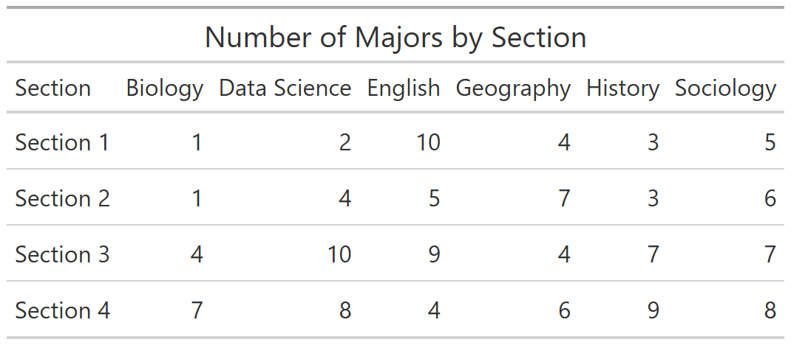
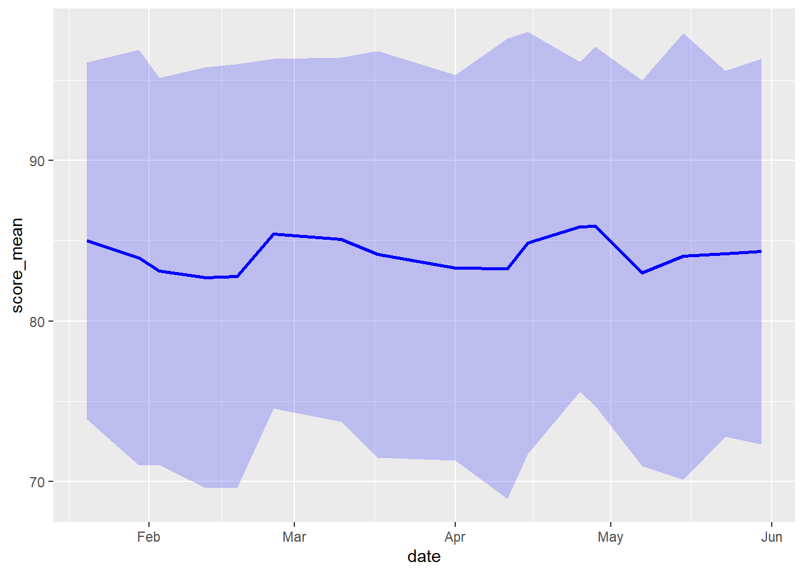

Data Wrangling Exercise 4
Mutate with Groups, Splitting Tables, Splitting Columns Pt 2, Long-to-Wide, Dates and Date Parts
In this exercise, we’ll continue to work with the pop-quiz data using the following techniques:
- mutate within groups
- splitting a table
- splitting columns
- pivoting from long-to-wide
Setup
Load the packages we’ll be using:
We’ll continue to work with the pop-quiz data. We can combine all of the import and data wrangling operations into a couple of expressions:
ss_nn_tbl <- here::here("./exercises/data/student_scores.tsv") |>
read_tsv(show_col_types = FALSE) |>
rename_all(str_to_lower) |>
rename_all(~ str_replace_all(., " ", "_"))
ss_cln_tbl <- ss_nn_tbl |>
pivot_longer(
cols = starts_with("quiz"),
names_to = "quiz",
values_to = "score"
) |>
filter(quiz != "quiz_07") |>
drop_na(score)
dim(ss_cln_tbl)[1] 1453 9ss_cln_tbl |> slice(1:20)Compute Ranks within Discusison Sections
So far, we’ve mostly used group_by() in combination with summarize(). For example:
`summarise()` has grouped output by 'section'. You can override using the
`.groups` argument.You can also follow group_by() with mutate(), when you want the values of a new column to be computed in groups.
An example of this would be computing the rank of each student within their discussion section. First we compute the average score of all quizes.
ss_avg_tbl <- ss_cln_tbl |>
group_by(section, name) |>
summarize(avg_all = mean(score, na.rm = TRUE)) |>
ungroup()`summarise()` has grouped output by 'section'. You can override using the
`.groups` argument.head(ss_avg_tbl)Next, we can compute the ranks within each discussion section:
Anonymize the data by splitting the table
A common technique to anonymize data is to create a random numeric value for each subject, and then separate the identifiable and research data into separate tables.
Step 1: Construct the personal info table, and create a unique numeric id for each student:
ss_pii_tbl <- ss_nn_tbl |>
select(name, sex, height, year, major, year, section) |>
mutate(student_id = sample(10000:99999, size = nrow(ss_nn_tbl))) |>
relocate(student_id, .after = name)
ss_pii_tbl |> slice(1:20)Step 2: Next, we join the personal info table to the research data table on the name column to bring in the student_id column.
ss_nn_stid_tbl <- ss_nn_tbl |>
left_join(ss_pii_tbl |> select(name, student_id), by = "name")
head(ss_nn_stid_tbl)Step 3: Now that we can link them together, we just have to delete the personal info columns from the research data.
ss_anon_tbl <- ss_nn_stid_tbl |>
select(student_id, treatment, starts_with("quiz")) |>
pivot_longer(
cols = starts_with("quiz"),
names_to = "quiz",
values_to = "score"
) |>
filter(quiz != "quiz_07")
head(ss_anon_tbl)The data are now anonymized!
CHALLENGE
- Using the anonymized research data table and personal info table, create a tidy (i.e., long) data frame of just the scores of the seniors. Be sure that your query avoids using any personally identifiable info.
## Your answer hereColumn Splitting Part II
Previously, we split the name column into first name and last name using mutate with str_split_i().
That approach won’t work with the major column. (Do you see why?)
The number of pieces in the major column varies. Therefore we need to split it out into additional rows or columns.
Let’s break apart the major column and add additional rows.
ss_majors_tbl <- ss_pii_tbl |>
select(student_id, major) |>
tidyr::separate_longer_delim(cols = "major", delim = ",") |>
mutate(major = str_trim(major))
ss_majors_tbl |> slice(1:50)How many students are in each major?
CHALLENGE
- Compute the number of majors each student has, and save it as a column in
ss_pii_tbl.
## Your answer herePivot Long to Wide
Let’s create a table that show the number of students in each major by section, like this:

Step 1: Compute the numbers
ss_majors_sect_tbl <- ss_pii_tbl |>
select(student_id, section, major) |>
tidyr::separate_longer_delim(cols = "major", delim = ",") |>
mutate(major = str_trim(major)) |>
group_by(section, major) |>
summarize(num_students = n())`summarise()` has grouped output by 'section'. You can override using the
`.groups` argument.ss_majors_sect_tblStep 2: Pivot wider for a nicer-looking table.
ss_major_sect_wide_tbl <- ss_majors_sect_tbl |>
pivot_wider(id_cols = section, names_from = major, values_from = num_students)
ss_major_sect_wide_tblCHALLENGE
- Flip the rows and columns in the previous table, so that the rows represent majors, and the columns represent the 4 discussion sections.
## Your answer hereWorking with Dates
Let’s import the actual dates of each quiz.
quiz_date_tbl <- here::here("exercises/data/quiz_date.tsv") |>
read_tsv(col_types = cols(col_character(), col_date())) |>
mutate(quiz = quiz |> str_to_lower() |> str_replace_all(" ", "_"))
quiz_date_tblNow that we have dates in our date, we can look at temporal patterns.
Plot the mean and standard deviation over time:
ss_dates_meansd_tbl <- ss_dates_tbl |>
group_by(date) |>
summarize(score_mean = mean(score, na.rm = TRUE),
score_sd = sd(score, na.rm = TRUE))
ggplot(ss_dates_meansd_tbl, aes(x = date, y = score_mean)) +
geom_line(color = "blue", linewidth = 1) +
geom_ribbon(aes(ymin = score_mean - score_sd,
ymax = score_mean + score_sd),
alpha = 0.2, fill = "blue") 
Which month had the great proportion of missing values?
ss_dates_tbl |>
group_by(month = lubridate::month(date)) |>
summarize(prp_na = sum(is.na(score)) / n())CHALLENGE
- Which day of the week had the highest quiz scores?
## Your answer hereDONE!
Remember to render your Quarto document so you have a pretty HTML file to keep for future reference.